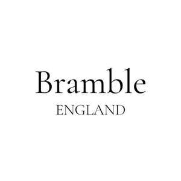

Trade Mark Journal No.2025/033 15 August 2025
UK00004243080 1 August 2025 (3,4,21,35)

- Class 3
- Skincare cosmetics; Skincare preparations; non-medicated skincare preparations; Anti-aging skincare preparations; Cosmetic products in the form of aerosols for skincare; all the aforesaid made or produced in the United Kingdom.
- Class 4
- Candles, Candle wax, Candles and wicks for candles for lighting, Wax for making candles.
- Class 21
- Cosmetic brushes; Cosmetics brushes; Cosmetics applicators; Cosmetic utensils; Cosmetic sponges; Cosmetic spatulas; Holders for cosmetics; Dispensers for cosmetics; Plastic buckets for storing bath toys; Household containers for storing pet food; Cosmetic bags [fitted]; Containers for cosmetics; all the aforesaid made or produced in the United Kingdom.
- Class 35
- Online retail store services in relation to clothing; Providing online marketplaces for sellers of goods and or services; Online retail store services relating to clothing; Provision of an online marketplace for buyers and sellers of goods and services; Online retail store services relating to cosmetic and beauty products; Online advertisements; Online marketing; Online advertising; Provision of an on-line marketplace for buyers and sellers of goods and services; Online ordering services; Retail store services in the field of clothing; Advertising the goods and services of online vendors via a searchable online guide; Online advertising services; Providing a searchable online advertising guide featuring the goods and services of online vendors; Online ordering services in the field of restaurant take-out and delivery; Online business networking services; Online community management services; Online data processing services; Online retail services for downloadable and pre-recorded music and movies; On-line trading services in which seller posts products to be auctioned and bidding is done via the Internet; Providing searchable online advertising guides; Online advertising on computer networks; Dissemination of advertising matter online; Compilation of online business directories; all the aforesaid made or produced in the United Kingdom,Administration of the business affairs of retail stores; Business management of retail outlets; Business management of wholesale and retail outlets; Mail order retail services for clothing; Mail order retail services for clothing accessories; Mail order retail services for cosmetics; Online retail services relating to clothing; Online retail services relating to cosmetics; Online retail services relating to handbags; Online retail services relating to jewelry; Online retail services relating to luggage; Online retail store services in relation to clothing; Online retail store services relating to clothing; Online retail store services relating to cosmetic and beauty products; Procurement of contracts for the purchase and sale of goods and services; Retail services connected with stationery; Retail services connected with the sale of clothing and clothing accessories; Retail services connected with the sale of furniture; Retail services connected with the sale of subscription boxes containing chocolates; Retail services connected with the sale of subscription boxes containing cosmetics; Retail services in relation to art materials; Retail services in relation to bags; Retail services in relation to baked goods; Retail services in relation to bakery products; Retail services in relation to chocolate; Retail services in relation to clothing; Retail services in relation to clothing accessories; Retail services in relation to coffee; Retail services in relation to cookware; Retail services in relation to cutlery; Retail services in relation to dairy products; Retail services in relation to desserts; Retail services in relation to domestic electrical equipment; Retail services in relation to domestic electronic equipment; Retail services in relation to fabrics; Retail services in relation to fashion accessories; Retail services in relation to food cooking equipment; Retail services in relation to foodstuffs; Retail services in relation to footwear; Retail services in relation to furnishings; Retail services in relation to furniture; Retail services in relation to gardening products; Retail services in relation to hair products; Retail services in relation to horticulture equipment; Retail services in relation to horticulture products; Retail services in relation to jewellery; Retail services in relation to kitchen appliances; Retail services in relation to luggage; Retail services in relation to metal hardware; Retail services in relation to stationery supplies; Retail services in relation to tableware; Retail services in relation to teas; Retail services in relation to toiletries; Retail services relating to bakery products; Retail services relating to clothing; Retail services relating to delicatessen products; Retail services relating to food; Retail services relating to furniture; Retail services relating to home textiles; Retail services relating to horticultural products; Retail services relating to jewelry; Retail shop window display arrangement services; Retail store services in the field of clothing; Promotion [advertising] of business; Marketing research in the fields of cosmetics, perfumery and beauty products .
BRAMBLE ENGLAND LTD